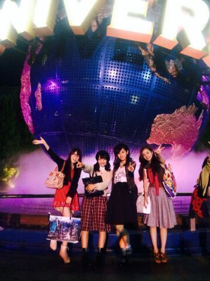
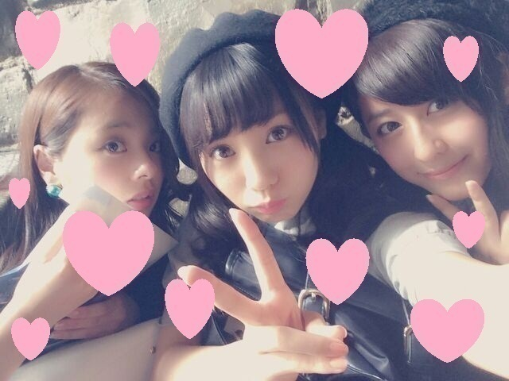

| 2014/10 05 Sun | 〜USJ〜大阪満喫。アンダ ーlive 〜ろってぃ−〜 |
皆〜こんにちわ !! ろってぃ−だよ〜＼(^-^)／
アンダーliveのリハーサルが始まる前に１日だけOFFがあって、
まひろ・かずみ・あみ・ちはるで『 USJ 』に行ってきました〜\(#^.^#)/

乗りたいアトラクションは全部乗れましたし、ご飯もゆっくりでき、ハロウィンも楽しめました、、、
新しくできた ハリーポッターは最高過ぎました。。。
夏の終わりに幸せな思い出つくれました..*
それに、かずみ・あみ・ちはるが
私の大阪の実家に泊まりました

何か不思議ですよね、、、まさかメンバーがわざわざ私の実家まで泊まりに来ることがあるなんて、、思ってもいなかった。笑
めっちゃ楽しかったですよ*^^*
ちなみに4人で温泉にも行って...
たこ焼屋さんの前で たこ焼食べながら写真とって...
一泊で大阪 充分楽しめました＼(^o^)／
来年の冬あたり、皆と時間が合えば また大阪、、、メンバーと行きたいな〜


そしてそしてっ////
今日からはそう !!!!!!!!!!
まちにまった、、、「アンダーーーーラーーーーイブ ♪♪♪」
今回のアンダーライブは
顔なんか！前髪なんか！見た目なんか！気にしてられない！
あっ。 前髪ないわ 笑
でも本当に ちょんまげとかして
おでこ綺麗に出してこっかな。。って思ってます
今日から18公演 連続 !!!!
頑張ります！ 盛り上がっていきましょう///
ろってぃ−コールよろしくねん !!!!!
ろってぃ−コールしてくれた方には
まにまにウインクしてあげる〜

どうよ？ 一人一人ウインクするよ？ けけけ*´`*。
じゃあ わかった！
ひめたんビーーームに勝てる
ろってぃ−の技を皆で考えないですかあ？
ひめたんビームをとばしてきた時に、それに対抗できるものをつくりませんか ？
ろってぃ−も考えます！
皆の意見待ってるよ〜..*募集します \(*´∇｀*)/
何でもいいです！
『これいいんじゃない？』ってのがあれば
是非 コメントしてください＼(^o^)／
むしろ、 ひめたん推しの皆さん
ひめたんに こうやって対抗してくれたら面白い
 とかないですかあ？へへへ。
とかないですかあ？へへへ。
とりあえず、今日からはライブの日々 !
ろってぃ−の時代や〜(#^.^#)へへ。
なんやったっけ？ 乃木坂カルタにさあ、
『 ダンスのセンターポジョンは譲れない...ろってぃ−』的なことを 書いてあったんだよね.♪
ではでは、頑張ります！楽しみます！
またね〜\(#^.^#)/
のし。
コメント(435)
2014/10/05 09:18